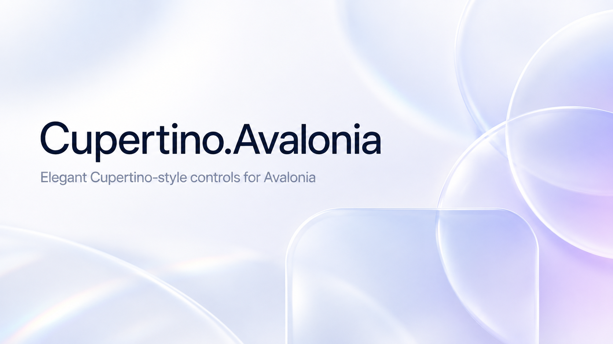

Build Avalonia apps with an iOS feel
Cupertino.Avalonia brings an iOS 26 appearance to Avalonia apps. It styles standard controls and adds navigation, sheets, pickers, grouped lists and Liquid Glass.

Start here
- Install and configure the theme
- Understand themed and Cupertino-specific controls
- Build with Liquid Glass
- Review accessibility and platform behavior
- Browse the generated API reference
What the library provides
| Area | Included |
|---|---|
| Standard controls | iOS-style buttons, fields, switches, sliders, lists, tabs, menus, progress, refresh, calendars, and more |
| Cupertino controls | Sheets, swipe actions, navigation stacks, badges, toolbars, list cells, search, page controls, date/time pickers, icons, and sections |
| Design language | Dynamic colors, typography, motion, RTL behavior, accessibility adaptations, and Liquid Glass |
| Platforms | Desktop, iOS, Android, and Browser |
Run the gallery to try the controls and view the source for each example.